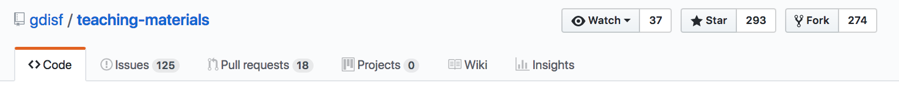
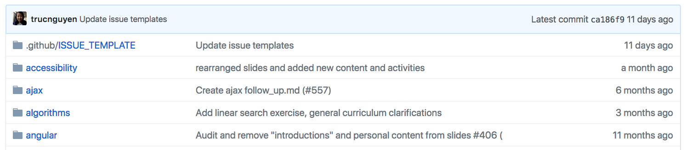
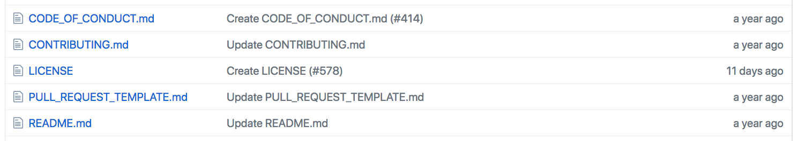

Intro to GitHub:
No Terminal Required
teaching-materials.org/github-web
Welcome!
What we will cover in this workshop
- Git and GitHub: What's the difference?
- Your GitHub profile and account settings
- Understanding repositories
- Making a contribution with the GitHub web UI
- Finding and choosing projects and communities
Git and GitHub
Git: Version control system software that you can run on your own computer, or on a server
GitHub: Web-based service for storing, sharing, and collaborating on projects managed with Git
Your GitHub Profile
Like a social media profile for your code

Your User Account Settings
You can add information and change settings for:
- your profile
- email preferences
- security and two-factor authentication
- blocking other users
Try It!
- Create a new account at github.com.
- Verify your email address.
- Edit your profile.
- Adjust your other account settings.
- Check out your profile page at
github.com/{your-username}.
What's a Repository?
A repository (or repo, for short) is Git's name for a project, like a folder. It contains all of the project's files and stores each file's revision history.
On GitHub, each repository has its own page, and includes several other features for collaboration.
Anatomy of a Repo
The header of a GitHub repository page includes features that GitHub adds on to Git.
Anatomy of a Repo
The file listing displays information common to all Git repositories.
Each row contains:
- a file or folder name
- a description of the last change
- when the last change was made
Anatomy of a Repo
GitHub treats some files as special based on their filenames.
These files are designed to help collaboration.
Pair Up!
Pair with a neighbor to explore the contents the teaching-materials repository
- Look at the files with capitalized filenames. What do you think is the purpose of each one?
- Find the most recently changed file. Find the least recently changed file.
- Bonus: find the code for this slide.